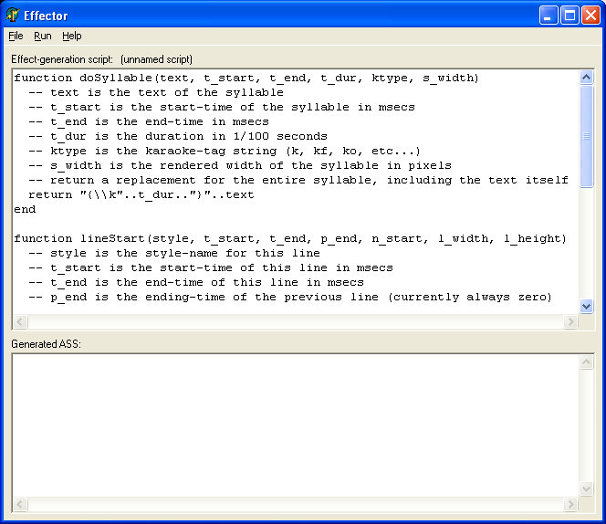
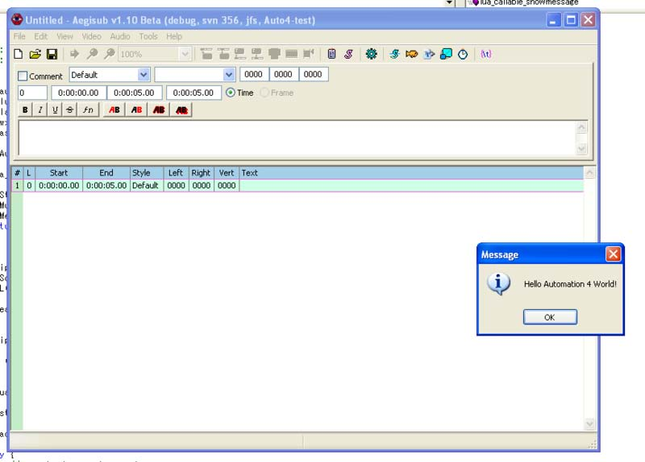

The Automation system in Aegisub has evolved from a very basic and hardly useful stand-alone system for creating basic karaoke effects into a very powerful extension mechanism. Here's a short account of its history, from the principal author of the systems.

The Karaoke Effector program was originally created for making karaoke effects for a small translation project, that later died. It was written in Borland Delphi and used Lua 5.0 for scripting. This use of Lua is the primary reason I even call it "Automation 1" today. It basically allowed creating effects similar to what the simple-k-replacer script from Automation 3 does, but in a more complicated and not as usable way.
If you want to try this relic from the museum, you can download it here: http://www.animereactor.dk/aegisub/effector.rar
Automation 2 was intended to be the scripting system in Aegisub, I drafted the specifications for it while Aegisub was still only in internal pre-alpha development. It was planned to use Python for scripting language and be quite flexible. It just proved to be an overall bad design (which on hindsight might have been a good thing) and it was never implemented. Instead I started looking into Lua again and drafting what became Automation 3.
I don't think there's much of any proof of the work on Automation 2 left now. The main thing to be said about it is that the current Automation 4 achieves everything Automation 2 was intended to be, and even more.
After the fiasco of Automation 2 and Python I went "browsing languages" again and ended up going back to Lua, and also went for a much less ambitious design. This proved to work and ended up as the Automation 3 system. Originally Automation 3 was also intended to be somewhat extensible and down the road support more than just the basic modification of subtitle lines, this is evident from the kind="basic_ass" statement required in all Automation 3 scripts. Unfortunately the overall architecture of Automation 3 in the end didn't allow it to be extended either way, and the first rough ideas for Automation 4 started forming.
In the end Automation 3 did prove very successful though and has done a great job.

As the flaws of Automation 3 started showing through the design of Automation 4 begun. Lots of people had been crying for other languages, especially Perl and Python, so support for multiple scripting languages went into the core design. The development of Automation 4 was much on and off, standing still for months at a time. Originally it was planned for Aegisub 1.09, then got pushed to 1.10 and then finally to 1.11, which then grew into Aegisub 2 because of the load of new features and major redesigns in that version, Automation 4 one of them.
In mid-May 2006 Automation 4/Lua was finally in a "working" state, if I am to trust the timestamp of hello-auto4.png but first now, more than a year later, it's really useful. A testament to my laziness.
- Niels Martin Hansen, July 2nd, 2007